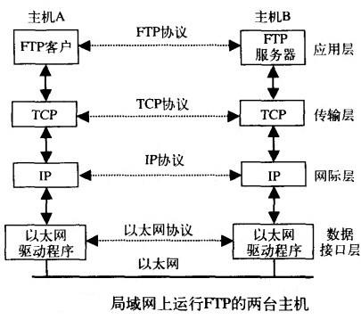
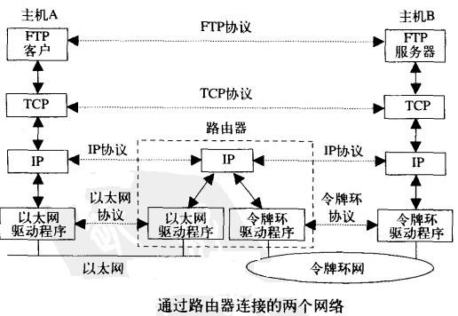
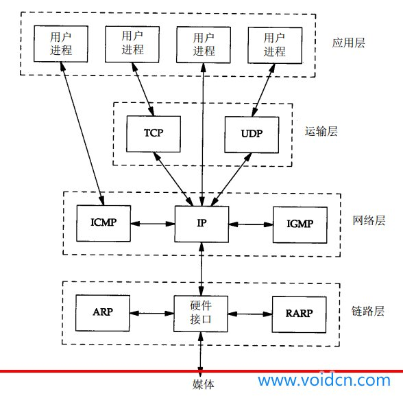
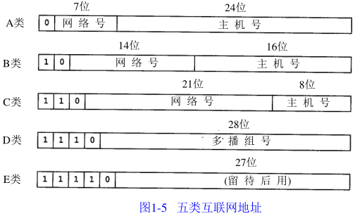
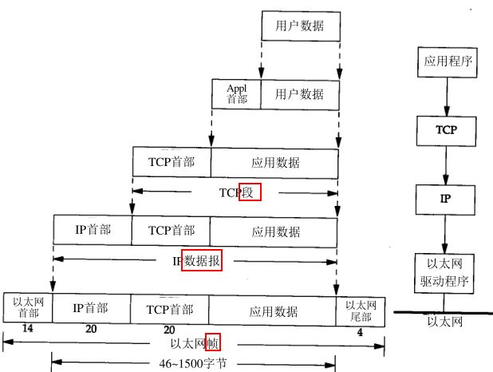
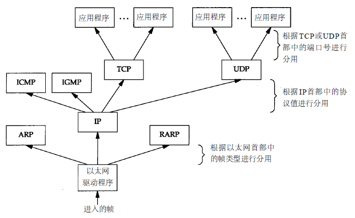

概述
Table of Contents
本章主要对TCP/IP协议族进行概述
分层
网络协议通常分不同层次进行开发，每一层分别负责不同的通信功能。一个协议族，比如TCP/IP，是一组不同层次上的多个协议的组合。TCP/IP通常被认为是一个四层协议系统，如下表所示：
| 分层 | 协议 | 传输单位 |
| 应用层 | HTTP, FTP | 用户数据 |
| 运输层 | TCP, UDP | 段segement |
| 网络层 | IP, ICMP, IGMP | 报文datagramm |
| 链路层 | ARP | 帧frame |
| 物理层 | 设备驱动程序及接口卡 |
链路层
有时也称作数据链路层或网络接口层，通常包括操作系统中的设备驱动程序和计算机中对应的网络接口卡。它们一起处理与电缆(或其他任何传输媒介)的物理接口细节
网络层
有时也称作互联网层，处理分组在网络中的活动，例如分组的选路。在TCP/IP协议族中，网络层协议包括：
- IP协议：网际协议
- ICMP协议：Internet互联网控制报文协议
- IGMP协议：Internet组管理协议
运输层
两台主机上的应用程序提供端到端的通信。在TCP/IP协议族中，有两个互不相同的传输协议:
- TCP: 传输控制协议
- UDP: 用户数据报协议
TCP为两台主机提供高可靠性的数据通信。它所做的工作包括把应用程序交给它的数据分成合适的小块交给下面的网络层，确认接收到的分组，设置发送最后确认分组的超时时钟 等。由于运输层提供了高可靠性的端到端的通信，因此应用层可以忽略所有这些细节
而另一方面，UDP则为应用层提供一种非常简单的服务。它只是把称作数据报的分组从一台主机发送到另一台主机，但并不保证该数据报能到达另一端。任何必需的可靠 性必须由应用层来提供
这两种运输层协议分别在不同的应用程序中有不同的用途，这一点将在后面看到
应用层
负责处理特定的应用程序细节。几乎各种不同的TCP/IP实现都会提供下面这些通用的应用程序：
- Telnet：远程登录
- FTP：文件传输协议
- SMTP：简单邮件传送协议
- SNMP：简单网络管理协议
FTP实例
假设在一个局域网中有两台主机，二者都运行FTP协议，下图列出了该过程所涉及到的所有协议：

- 这里列举了一个FTP客户程序和另一个FTP服务器程序。大多数的网络应用程序都被设计成客户/服务器模式。服务器为客户提供某种服务，在本例中就是访问服务器所在主机上的文件
- 在同一层上，双方都有对应的一个或多个协议进行通信。例如，某个协议允许TCP层进行通信，而另一个协议则允许两个IP层进行通信
- 应用程序通常是一个用户进程，而下三层则一般在(操作系统)内核中执行。尽管这不是必需的，但通常都是这样处理的，例如UNIX操作系统
- 顶层与下三层之间还有另一个关键的不同之处。应用层关心的是应用程序的细节，而不是数据在网络中的传输活动。下三层对应用程序一无所知，但它们要处理所有的通信细节
TCP/IP协议族
TCP/IP协议族是一组不同的协议组合在一起构成的协议族。尽管通常称该协议族为TCP/IP，但TCP和IP只是其中的两种协议而已
网络接口层和应用层的目的是很显然的：前者处理有关通信媒介的细节(以太网、令牌环网等)，而后者处理某个特定的用户应用程序(FTP、Telnet等)。但是从表面上看，网络层和运输层之间的区别不那么明显。为什么要把它们划分成两个不同的层次呢？为了理解这一点，我们必须把视野从单个网络扩展到一组网络
在80年代，网络不断增长的原因之一是大家都意识到只有一台孤立的计算机构成的“孤岛”没有太大意义，于是就把这些孤立的系统组在一起形成网络。随着这样的发展，到了90年代，我们又逐渐认识到这种由单个网络构成的新的更大的“岛屿”同样没有太大的意义。于是人们又把多个网络连在一起形成一个网络的网络，或称作互连网(internet)。一个互连网就是一组通过相同协议族互连在一起的网络
构造互连网最简单的方法是把两个或多个网络通过路由器进行连接。它是一种特殊的用于网络互连的硬件盒。路由器的好处是为不同类型的物理网络提供连接：以太网、令牌环网、点对点的链接和FDDI(光纤分布式数据接口)等等。这些盒子也称作IP路由器，但我们这里使用路由器(Router)这个术语。从历史上说这些盒子被称作网关(gateway)，在很多TCP/IP文献中都使用这个术语。现在网关这个术语却经常用来表示应用层网关
路由器
下图是一个包含两个网络的互连网：一个以太网和一个令牌环网，通过一个路由器互相连接。尽管这里是两台主机通过路由器进行通信，实际上以太网中的任何主机都可以与令牌环网中的任何主机进行通信：

图中可以划分出端系统(End system)(两边的两台主机)和中间系统(Intermediate system)(路由器)。应用层和运输层使用端到端(End-to-end)协议。在图中只有端系统需要这两层协议。但是网络层提供的却是逐跳(Hop-by-hop)协议，两个端系统和每个中间系统都要使用它
在TCP/IP协议族中，网络层IP提供的是一种不可靠的服务。也就是说，它只是尽可能快地把分组从源结点送到目的结点，但是并不提供任何可靠性保证。而另一方面，TCP在不可靠的IP层上提供了一个可靠的运输层。为了提供这种可靠的服务，TCP采用了超时重传、发送和接收端到端的确认分组等机制。由此可见，运输层和网络层分别负责不同的功能
从定义上看，一个路由器具有两个或多个网络接口层(因为它连接了两个或多个网络)。任何具有多个接口的系统，英文都称作是多接口的(multihomed)。一个主机也可以有多个接口，但一般不称作路由器，除非它的功能只是单纯地把分组从一个接口传送到另一个接口。同样，路由器并不一定指那种在互联网中用来转发分组的特殊硬件盒。大多数的TCP/IP实现也允许一个多接口主机来担当路由器的功能，但是主机为此必须进行特殊的配置。在这种情况下，我们既可以称该系统为主机(当它运行某一应用程序时，如FTP或Telnet)，也可以称之为路由器(当它把分组从一个网络转发到另一个网络时)。在不同的场合下使用不同的术语
互联网的目的之一是在应用程序中隐藏所有的物理细节。虽然这一点在上图由两个网络组成的互联网中并不很明显，但是应用层不能关心一台主机是在以太网上，而另一台主机是在令牌环网上，它们通过路由器进行互连。随着增加不同类型的物理网络，可能会有20个路由器，但应用层仍然是一样的。物理细节的隐藏使得互联网功能非常强大，也非常有用
网桥
连接网络的另一个途径是使用网桥：网桥是在链路层上对网络进行互连，而路由器则是在网络层上对网络进行互连
网桥使得多个局域网(LAN)组合在一起，这样对上层来说就好像是一个局域网。TCP/IP倾向于使用路由器而不是网桥来连接网络，因此我们将着重介绍路由器
协议
在TCP/IP协议族中有很多种协议。下图给出了将要讨论的其他协议：

链路层
某些网络接口(如以太网和令牌环网)使用的特殊协议，用来转换IP层和网络接口层使用的地址：
- ARP：地址解析协议
- RARP：逆地址解析协议
网路层
- IP是网络层上的主要协议，同时被TCP和UDP使用。TCP和UDP的每组数据都通过端系统和每个中间路由器中的IP层在互联网中进行传输。给出了一个直接访问IP的应用程序。这是很少见的，但也是可能的(一些较老的选路协议就是以这种方式来实现的。当然新的运输层协议也有可能使用这种方式)
- ICMP：IP协议的附属协议。IP层用它来与其他主机或路由器交换错误报文和其他重要信息
- ping
- traceroute
- IGMP：Internet组管理协议。它用来把一个UDP数据报多播到多个主机
运输层
- UDP：应用程序发送和接收数据报。一个数据报是指从发送方传输到接收方的一个信息单元(例如，发送方指定的一定字节数的信息)。但是与TCP不同的是，UDP是不可靠的，它不能保证数据报能安全无误地到达最终目的：
- DNS: 域名系统
- TFTP：简单文件传送协议
- BOOTP:引导程序协议
- TCP：使用不可靠的IP服务，但它却提供一种可靠的运输层服务
- telnet
- rlogin
- ftp
- smtp
互联网的地址
互联网上的每个接口必须有一个唯一的Internet地址(也称作IP地址)。IP地址长32bit。Internet地址并不采用平面形式的地址空间，具有一定的结构，五类不同的互联网地址格式如下图所示：

这些32位的地址通常写成四个十进制的数，其中每个整数对应一个字节。这种表示方法称作“点分十进制表示法”。例如一个B类地址，它表示为140.252.13.33
区分各类地址的最简单方法是看它的第一个十进制整数，下表列出了各类地址的起止范围：
| 地址类型 | 范围 |
| A | 0.0.0.0 到 127.255.255.255 |
| B | 128.0.0.0 到 191.255.255.255 |
| C | 192.0.0.0 到 223.255.255.255 |
| D | 224.0.0.0 到 239.255.255.255 |
| E | 240.0.0.0 到 247.255.255.255 |
多接口主机具有多个IP地址，其中每个接口都对应一个IP地址
由于互联网上的每个接口必须有一个唯一的IP地址，因此必须要有一个管理机构为接入互联网的网络分配IP地址。这个管理机构就是互联网络信息中心INIC。注意：INIC只分配网络号，主机号的分配由系统管理员来负责
有三类IP地址：
- 单播地址：目的为单个主机
- 广播地址：给定网络上的所有主机，例如192.168.2.255
- 多播地址：目的端为同一组内的所有主机，例如192.168.2.0
域名系统
尽管通过IP地址可以识别主机上的网络接口，进而访问主机，但是人们最喜欢使用的还是主机名。在TCP/IP领域中，域名系统(DNS)是一个分布的数据库，由它来提供IP地址和主机名之间的映射信息
任何应用程序都可以调用一个标准的库函数来查看给定名字的主机的IP地址。类似地，系统还提供一个逆函数：给定主机的IP地址，查看它所对应的主机名。大多数使用主机名作为参数的应用程序也可以把IP地址作为参数
传输单元
当应用程序用TCP传送数据时，数据被送入协议栈中，然后逐个通过每一层直到被当作一串比特流送入网络。其中每一层对收到的数据都要增加一些首部信息(有时还要增加尾部信息)，该过程如下图所示：

- TCP段(Segement)：TCP传给IP的数据单元
- IP数据报(Datagram)：IP传给网络接口层的数据单元
- 以太帧(Frame)：通过以太网传输的比特流
其中帧头和帧尾下面所标注的数字是典型以太网帧首部的字节长度。以太网数据帧的物理特性是其长度必须在46~1500字节之间
更准确地说，IP和网络接口层之间传送的数据单元应该是分组(packet)。分组既可以是一个IP数据报，也可以是IP数据报的一个片(fragment)
分用
分用(demultiplexing)：当目的主机收到一个以太网数据帧时，数据就开始从协议栈中由底向上升，同时去掉各层协议加上的报文首部。每层协议盒都要去检查报文首部中的协议标识，以确定接收数据的上层协议，下图显示了该过程是如何发生的：

客户-服务器模型
大部分网络应用程序在编写时都假设一端是客户，另一端是服务器，其目的是为了让服务器为客户提供一些特定的服务。可以将这种服务分为两种类型：
- 重复型
- 并发型
重复型
重复型服务器通过以下步骤进行交互：
- 等待一个客户请求的到来
- 处理客户请求
- 发送响应给发送请求的客户
- 返回第1步。
重复型服务器主要的问题发生在第二步。在这个时候，它不能为其他客户机提供服务
并发型
相应地并发型服务器采用以下步骤：
- 等待一个客户请求的到来
- 启动一个新的服务器来处理这个客户的请求。在这期间可能生成一个新的进程、任务或线程，并依赖底层操作系统的支持。这个步骤如何进行取决于操作系统。生成的新服务器对客户的全部请求进行处理。处理结束后，终止这个新服务器
- 返回第1步。
并发服务器的优点在于它是利用生成其他服务器的方法来处理客户的请求。也就是说每个客户都有它自己对应的服务器。如果操作系统允许多任务，那么就可以同时为多个客户服务
一般来说，TCP服务器是并发的，而UDP服务器是重复的
端口号
TCP和UDP采用16bit的端口号来识别应用程序
服务器一般都是通过知名端口号来识别的。例如对于每个TCP/IP实现来说，FTP服务器的TCP端口号都是21，每个Telnet服务器的TCP端口号都是23，每个TFTP(简单文件传送协议)服务器的UDP端口号都是69。任何TCP/IP实现所提供的服务都用知名的1~1023之间的端口号。这些知名端口号由IANA机构来管理
客户端通常对它所使用的端口号并不关心，只需保证该端口号在本机上是唯一的就可以了。所以客户端的端口号又称作临时端口号(即存在时间很短暂)。这是因为它通常只是在用户运行该 客户程序时才存在，而服务器则只要主机开着的，其服务就运行
现在大多数TCP/IP实现给临时端口从32768开始分配